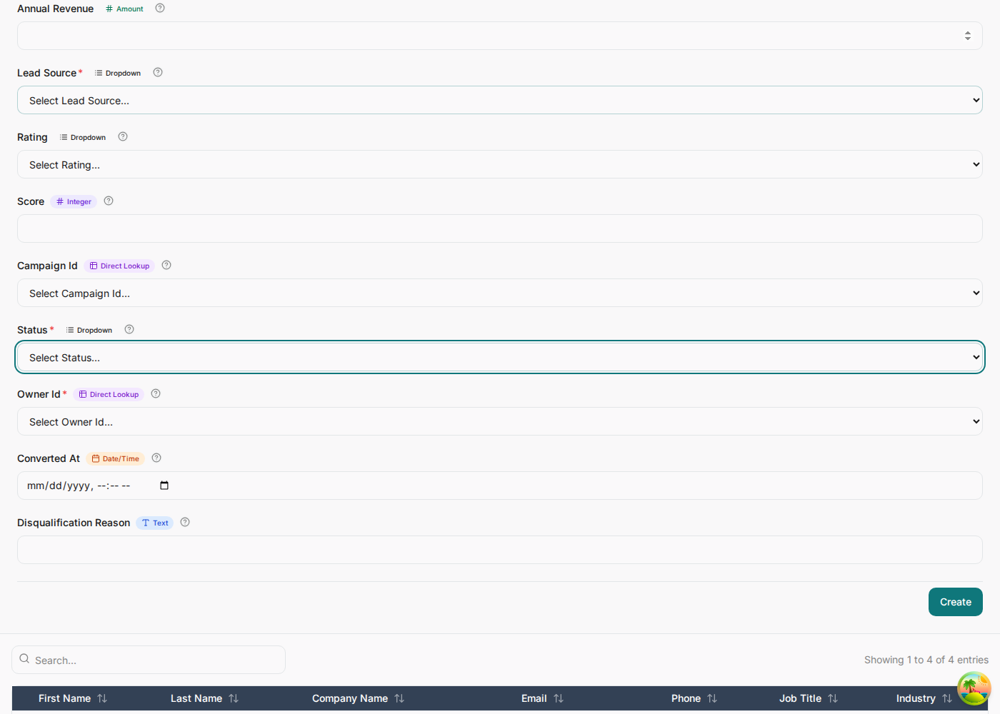

The data model
The erDiagram section is the foundation: it decides your tables, your API, your forms and
your grids. Everything in later chapters attaches to something you name here, so it is worth getting the
names right before you write a single rule.
The shape of a model file
One file, several diagrams, read top to bottom. A section starts at a Mermaid keyword and runs until the next one. Directives above a section configure it; directives inside it annotate what it declares.
%% ---- Section 1: ERD --------------------------------------------------
%%meta name: Enterprise CRM
%%meta kind: erd
%%meta version: 1.0.0
%%category name: Sales Pipeline; icon: TrendingUp; entities: Opportunity, Product
%%enum LeadStatus: new, working, nurturing, qualified, converted, disqualified
erDiagram
Lead {
string id PK
...
}
Campaign ||--o{ Lead : "generates"
%%field Lead.status enum: LeadStatus
%%index Lead(owner_id, status)
%%entity Lead audited: true
%% ---- Section 2: a business rule --------------------------------------
%%meta kind: rules
%%rule leadScoring on Lead event: beforeCreate priority: 10
flowchart TD
...
Open the file in any Mermaid preview. The ERD draws, the flowcharts draw, the state diagrams draw. The
%% lines are invisible there — which is the point: the picture stays honest and the
generator still gets its instructions.
Entities and attributes
An entity block is a table. Each line inside is type name [modifiers]. The type comes first,
the way Mermaid's ER grammar wants it.
Lead {
string id PK
string first_name
string last_name
string company_name
email email
phone phone OPTIONAL
string job_title OPTIONAL
string industry OPTIONAL
integer employee_count OPTIONAL
decimal annual_revenue OPTIONAL
string lead_source
string rating OPTIONAL
integer score OPTIONAL
string campaign_id FK OPTIONAL
string status
string owner_id FK
datetime converted_at OPTIONAL
string disqualification_reason OPTIONAL
}Types
Eight canonical types — string, text, integer,
decimal, boolean, date, datetime, json —
plus aliases that normalize to one of them while carrying intent. email is a
string that renders as an email input; phone, url,
password and money behave the same way. Use the alias when it says something
true; nothing breaks if you use the base type instead.
Modifiers
| Modifier | Meaning | Watch out for |
|---|---|---|
PK | Primary key. Every entity gets string id PK if you omit one. | — |
FK | Foreign key. The column name decides what it points at. | See below — this is the one that catches people. |
UK | Unique. Emits a unique index. | Unique and required means the caller must always supply it. |
OPTIONAL | Nullable. Everything is required by default. | Mermaid's ER grammar has no equivalent, so ERDs render through a normalizer that strips it. |
Foreign keys resolve by name
There is no syntax for "this column points at that table". The generator derives it from the column name, so the name has to carry the reference:
account_id→ theAccountentity.sla_policy_id→SlaPolicy.owner_id,manager_id,user_id, and anything ending_byor_by_id→ the user entity. A person named by the role they played is still a user; there is nobus_approved_bytable.- Anything that resolves to nothing is stored as a plain string: no lookup, no display name, a raw UUID in your grids.
string assigned_to FK looks fine and quietly does the wrong thing — it does not end in
_id, so the checker flags EML114 and the column renders as raw text.
Either use a name the resolver knows (owner_id, escalated_by_id) or accept
that you are storing an opaque string.
Relationships
Standard Mermaid cardinality operators. The label becomes the relationship's name; the glyphs decide which side carries the foreign key.
Account ||--o{ Contact : "employs"
Account ||--o{ Opportunity : "has pipeline"
Opportunity ||--o{ OpportunityLineItem : "contains"
Opportunity ||--o{ Quote : "is priced by"
Quote ||--o{ Contract : "becomes"
SlaPolicy ||--o{ SupportCase : "applies to"
User ||--o{ Opportunity : "owns"
Declare a relationship for every foreign key you write, including the ownership ones back to
User. The checker reports the gap as EML502, and the generated application
uses the relationship to build lookups, child panels and the sentence in each window's help text.

Enums: closed vocabularies
Declare the values once, then bind columns to them. This is what turns a status column from a text box into a dropdown, so it matters more than it looks.
%%enum LeadStatus: new, working, nurturing, qualified, converted, disqualified
%%enum LeadRating: hot, warm, cold
%%enum CasePriority: low, medium, high, critical
%% inside the erDiagram, after the entity blocks
%%field Lead.status enum: LeadStatus
%%field Lead.rating enum: LeadRating
%%field SupportCase.priority enum: CasePriority
Use closed_won, not "Closed Won". The raw value is what every rule, workflow and state
machine compares; the application derives the display label from it (closed_won →
"Closed Won"). Change the label in the dictionary, keep the value stable.
Match the state machine exactly
If an entity has a lifecycle, its status enum and its state machine must carry the same set of values. The checker compares them and reports a state missing from the enum (EML426) or an enum value no state uses (EML427). Two lists that drift apart are the classic way a status ends up unreachable.
Indexes
UK gets you a single-column unique index for free. Anything composite — the pairs your lists
actually filter and sort by — has to be asked for.
%%index Account(territory_id, status)
%%index Lead(owner_id, status)
%%index Opportunity(account_id, stage)
%%index Opportunity(owner_id, expected_close_date)
%%index SupportCase(owner_id, priority)
%%index Activity(owner_id, due_at)
Pick them from the questions the application asks: "my open opportunities by close date" is
Opportunity(owner_id, expected_close_date). The column order matters — leading column first.
Grouping the dashboard
%%category decides how the home screen is organised. Without it every entity lands in one
undifferentiated "General" block, which is survivable at five entities and unusable at seventeen.
%%category name: Sales Pipeline; description: Opportunities, their line items and the products sold; icon: TrendingUp; color: #0ea5e9; entities: Opportunity, OpportunityLineItem, Product
%%category name: Customer Service; description: Support cases and the service levels that govern them; icon: LifeBuoy; color: #f59e0b; entities: SupportCase, SlaPolicy
%%category name: People and Teams; description: Users, selling teams and organisational structure; icon: Users; color: #64748b; default: true; entities: User, Team
Keys are ;-separated and only name is required. default: true
marks the category that catches anything you forgot to assign — at most one document may declare it.
The description is rendered under the group heading, so write it for the person using the
application, not for yourself.
Entity-level metadata
%%entity Account audited: true -- every change recorded in the audit log
%%entity Activity softDelete: true -- deletes stamp deleted_at instead of removing
%%entity Product label: Product CatalogueCheck before you go further
The checker reads the whole document against the language definition and reports errors, warnings and informational notes with line numbers and fixes. Run it while you write, not at the end.
$ bun language/checker.ts language/examples/crm.eml.mmd
Checking crm.eml.mmd
✓ No issues found.
crm.eml.mmd 0 errors · 0 warningsErrors stop generation. Warnings are things that will bite later — an FK that will not resolve, a state nothing can reach, a decision node with one branch. The infos are usually a missing relationship behind a foreign key you did declare. A model worth generating from reports nothing at all.